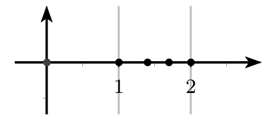
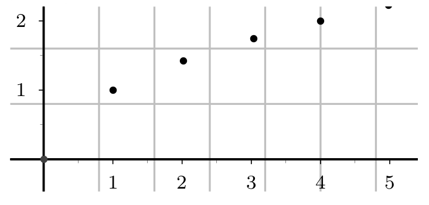

Rappels sur les suites
Définition
Définition
Une suite notée u ou (u_n) est une fonction dans laquelle la variable n ne prend que des valeurs entières positives. A chaque entier naturel n on associe un nombre réel u(n) image de l'entier n par u, notée u_n, appelée terme d'indice n ou terme général de la suite (u_n).
Warning
Attention bien faire la différence entre le terme général u_n et la suite (u_n).
Modes de génération d'une suite
Méthode
On peut définir une suite de façon explicite en fonction de n : \mathbf{u_n=f(n)}
Exercice
Soit (u_n) la suite définie par u_n=-5+7n pour n \geqslant0. Ici u_n=f(n).
- Déterminer f.
- Calculer u_0, u_1, u_2, u_6
Solution
- f(x)=-5+7x
-
- u_0=-5+7\times0=-5
- u_1=-5+7\times1=2
- u_2=-5+7\times2=9
- u_6=-5+7\times6=37
Méthode
On peut définir une suite de façon récurrente du type
La suite est définie par la donnée de son premier terme et d'une relation de récurrence entre un terme et le terme suivant )
Exercice
Soit (u_n)_{n \in \mathbb{N}} la suite définie par :
- Déterminer f telle que u_{n+1}=f(u_n)
- Calculer u_1, u_2, u_3. Et pour u_{100}, qu'en pensez-vous ?
Solution
- Ici u_{n+1} =f(u_n) avec f(x)=-2x+1
-
- u_1=0.75u_0+2=0.75\times4+2=5
- u_2=0.75u_1+2=0.75\times(5)+2=5.75
- u_3=0.75u_2+2=0.75\times5.75+2=6,3125
L'inconvénient est que des termes "éloignés" du début de la suite sont difficiles d'accès: pour calculer u_{100} il faut, a priori, calculer tous les termes précédents, jusqu'à u_{99} !!
Il sera parfois nécessaire d'utiliser un programme afin de calculer des termes éloignées.
Méthode
On peut encore définir une suite par l’intermédiaire d’une autre suite ou par une somme de termes, etc. . .
Par exemple :
- (u_n) étant définie, on définit la suite (v_n) par : v_n = u_n- 4
- On définit la suite (w_n) pour tout n\in \mathbb{N}^* par :
Représentation graphique d'une suite
La suite est définie de façon explicite
On peut representer une telle suite sur une droite (avec donc des points de coordonnées (u_n;0)) ou dans un plan avec des points de coordonnées (n;u_n).
Suite u_n=\sqrt{n} sur une droite : 
{kind=link}
Suite u_n=\sqrt{n} dans un plan : 
{kind=link}
La suite est définie à l'aide d'une relation de récurrence
Le plan est muni d'un repère , on peut représenter graphiquement les premiers termes de la suite sans les calculer à l'aide de la courbe C_f représentant la fonction f et la droite \Delta d'équation y=x
Méthode : Programme de construction
- Placer u_0 sur l'axe des abscisses
- Placer le point A_0 de C_f d'abscisse de u_0, son ordonnée est u_1=f(u_0).
- Placer le point B_0 de \Delta de même ordonnée que A_0 c'est-à-dire d'ordonnée u_1, son abscisse est aussi u_1
- Placer u_1 l'abscisse de B_0 sur l'axe des abscisses .
- Recommencer à partir de u_1 les mêmes étapes et placer u_2, etc...
{kind=link}
La lecture graphique donne des valeurs approchées des u_n, et elle permet d'émettre des conjectures concernant le comportement global et asymptotique de la suite. Elle semble :
- croissante, décroissante ou stationnaire (parfois périodique);
- converger vers l'abscisse du point d'intersection de C_f et de \Delta, ou diverger.
Exercice
On considère la suite (u_n) définie par
avec f(x) =\dfrac{2}{3-x}.
On admet que f est croissante sur [0,3[.
- Construire les premiers termes de la suite en utilisant le programme de construction.
- Conjecturer les variations de la suite u. Par quelles valeurs semble-t-elle bornée?